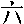
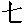

| Number | Character | Reading | Meaning |
|---|---|---|---|
| 0 | líng | 0 | |
| 1 | yī | 1 | |
| 2 | èr | 2 | |
| 3 | sān | 3 | |
| 4 | sì | 4 | |
| 5 | wŭ | 5 | |
| 6 |  | liù | 6 |
| 7 |  | qī | 7 |
| 8 | bā | 8 | |
| 9 | jiŭ | 9 | |
| 10 | shí | 10 | |
| 11 | shíyī | 10 + 1 | |
| 12 | shíèr | 10 + 2 | |
| 13 | shísān | 10 + 3 | |
| 14 | shísì | 10 + 4 | |
| 15 | shíwŭ | 10 + 5 | |
| 16 | shíliù | 10 + 6 | |
| 17 | shíqī | 10 + 7 | |
| 18 | shíbā | 10 + 8 | |
| 19 | shíjiŭ | 10 + 9 | |
| 20 | èrshí | 2 × 10 | |
| 21 | èrshi yī | 2 × 10* + 1 | |
| 22 | èrshi èr | 2 × 10* + 2 | |
| 23 | èrshi sān | 2 × 10* + 3 | |
| 24 | èrshi sì | 2 × 10* + 4 | |
| 25 | èrshi wŭ | 2 × 10* + 5 | |
| 26 | èrshi liù | 2 × 10* + 6 | |
| 27 | èrshi qī | 2 × 10* + 7 | |
| 28 | èrshi bā | 2 × 10* + 8 | |
| 29 | èrshi jiŭ | 2 × 10* + 9 | |
| 30 | sānshí | 3 × 10 | |
| 31 | sānshi yī | 3 × 10* + 1 | |
| 32 | sānshi èr | 3 × 10* + 2 | |
| 33 | sānshi sān | 3 × 10* + 3 | |
| 34 | sānshi sì | 3 × 10* + 4 | |
| 35 | sānshi wŭ | 3 × 10* + 5 | |
| 36 | sānshi liù | 3 × 10* + 6 | |
| 37 | sānshi qī | 3 × 10* + 7 | |
| 38 | sānshi bā | 3 × 10* + 8 | |
| 39 | sānshi jiŭ | 3 × 10* + 9 | |
| 40 | sìshí | 4 × 10 | |
| 41 | sìshi yī | 4 × 10* + 1 | |
| 42 | sìshi èr | 4 × 10* + 2 | |
| 43 | sìshi sān | 4 × 10* + 3 | |
| 44 | sìshi sì | 4 × 10* + 4 | |
| 45 | sìshi wŭ | 4 × 10* + 5 | |
| 46 | sìshi liù | 4 × 10* + 6 | |
| 47 | sìshi qī | 4 × 10* + 7 | |
| 48 | sìshi bā | 4 × 10* + 8 | |
| 49 | sìshi jiŭ | 4 × 10* + 9 | |
| 50 | wŭshí | 5 × 10 | |
| 51 | wŭshi yī | 5 × 10* + 1 | |
| 52 | wŭshi èr | 5 × 10* + 2 | |
| 53 | wŭshi sān | 5 × 10* + 3 | |
| 54 | wŭshi sì | 5 × 10* + 4 | |
| 55 | wŭshi wŭ | 5 × 10* + 5 | |
| 56 | wŭshi liù | 5 × 10* + 6 | |
| 57 | wŭshi qī | 5 × 10* + 7 | |
| 58 | wŭshi bā | 5 × 10* + 8 | |
| 59 | wŭshi jiŭ | 5 × 10* + 9 | |
| 60 | liùshí | 6 × 10 | |
| 61 | liùshi yī | 6 × 10* + 1 | |
| 62 | liùshi èr | 6 × 10* + 2 | |
| 63 | liùshi sān | 6 × 10* + 3 | |
| 64 | liùshi sì | 6 × 10* + 4 | |
| 65 | liùshi wŭ | 6 × 10* + 5 | |
| 66 | liùshi liù | 6 × 10* + 6 | |
| 67 | liùshi qī | 6 × 10* + 7 | |
| 68 | liùshi bā | 6 × 10* + 8 | |
| 69 | liùshi jiŭ | 6 × 10* + 9 | |
| 70 | qīshí | 7 × 10 | |
| 71 | qīshi yī | 7 × 10* + 1 | |
| 72 | qīshi èr | 7 × 10* + 2 | |
| 73 | qīshi sān | 7 × 10* + 3 | |
| 74 | qīshi sì | 7 × 10* + 4 | |
| 75 | qīshi wŭ | 7 × 10* + 5 | |
| 76 | qīshi liù | 7 × 10* + 6 | |
| 77 | qīshi qī | 7 × 10* + 7 | |
| 78 | qīshi bā | 7 × 10* + 8 | |
| 79 | qīshi jiŭ | 7 × 10* + 9 | |
| 80 | bāshí | 8 × 10 | |
| 81 | bāshi yī | 8 × 10* + 1 | |
| 82 | bāshi èr | 8 × 10* + 2 | |
| 83 | bāshi sān | 8 × 10* + 3 | |
| 84 | bāshi sì | 8 × 10* + 4 | |
| 85 | bāshi wŭ | 8 × 10* + 5 | |
| 86 | bāshi liù | 8 × 10* + 6 | |
| 87 | bāshi qī | 8 × 10* + 7 | |
| 88 | bāshi bā | 8 × 10* + 8 | |
| 89 | bāshi jiŭ | 8 × 10* + 9 | |
| 90 | jiŭshí | 9 × 10 | |
| 91 | jiŭshi yī | 9 × 10* + 1 | |
| 92 | jiŭshi èr | 9 × 10* + 2 | |
| 93 | jiŭshi sān | 9 × 10* + 3 | |
| 94 | jiŭshi sì | 9 × 10* + 4 | |
| 95 | jiŭshi wŭ | 9 × 10* + 5 | |
| 96 | jiŭshi liù | 9 × 10* + 6 | |
| 97 | jiŭshi qī | 9 × 10* + 7 | |
| 98 | jiŭshi bā | 9 × 10* + 8 | |
| 99 | jiŭshi jiŭ | 9 × 10* + 9 | |
| 100 | yìbăi | 1* × 100 |
| Number | Character | Reading | Meaning |
|---|---|---|---|
| 1234 | yìqiān èrbăi sānshi sì | 1* × 1000 + 2 × 100 + 3 × 10* + 4 | |
| 1230 | yìqiān èrbăi sān | 1* × 1000 + 2 × 100 + 3 (× 10) | |
| 1200 | yìqiān èr | 1* × 1000 + 2 (× 100) | |
| 1000 | yìqiān | 1* × 1000 | |
| 1002 | yìqiān líng èr | 1* × 1000 + 0 + 2 | |
| 1020 | yìqiān líng èrshí | 1* × 1000 + 0 + 2 × 10 | |
| 1203 | yìqiān èrbăi líng sān | 1* × 1000 + 2 × 100 + 0 + 3 |